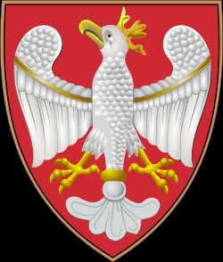

Antavla
3076951180 Duke Simomysl
Hertig av Polen. Blev högst -20 år.

Far:
Lestek
Född:
mellan 980 och 1020.
[1]
Död:
mellan 950 och 960.
[1]
Barn med ?
Barn:
Mieszko I (930? - 992)
Personhistoria
Årtal
Ålder
Händelse
>950
Död mellan 950 och 960
[1]
>980
Födelse mellan 980 och 1020
[1]
Källor
[1]
Wikipedia